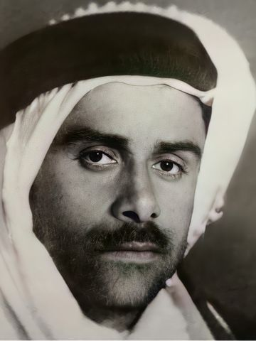

Abdulla Abdulaziz Al-Qatami
1913 to 1995
Life in brief
Nakhuda Abdulla bin Abdulaziz Al-Qatami trained under his cousin Abdulwahab bin Eissa and commanded ships from the early 1930s to the late 1940s. Alan Villiers sailed beside his small boom from Aden to Zanzibar and home in 1938 and 1939 and called him Nejdi's «boon companion». He died at home in April 1995.
Life facts
- Born
- 1913, as recorded in the family tree. No published source gives his birth year, Kuwait
- Died
- 4 Apr 1995, Kuwait
- Alan Villiers
- Alan Villiers sailed in company with his small boom, known to seafarers simply as «the boom Abdulla Kitami», from Aden down to Africa and back up to Arabia, and called him Nejdi's «fellow nakhoda and boon companion». He carried 150 passengers from Shihr to Mombasa in fourteen days. At Mutrah in 1939 the Kuwaiti nakhodas in the harbour told him of the death of his brother Mohammed, which Villiers calls «a profound and terrible shock»; sick with fever, he went aboard Abdulwahab's Al-Daw while his own boom was sailed home by his muallim. Back in Kuwait his boom rested on the beach before the Kitami house, by the waterfront (Alan Villiers, Sons of Sindbad, 2006 edition, pages 23, 27 to 29, 58, 183, 247 to 250, 269 to 271 and 322)
Family
- Father
- Abdulaziz Abdulwahab Abdulaziz Al-Qatami
- Mother
- Aisha Al-Oraifan
- Children
- Sharifa Abdulla Al-Qatami, Monira Abdulla Al-Qatami